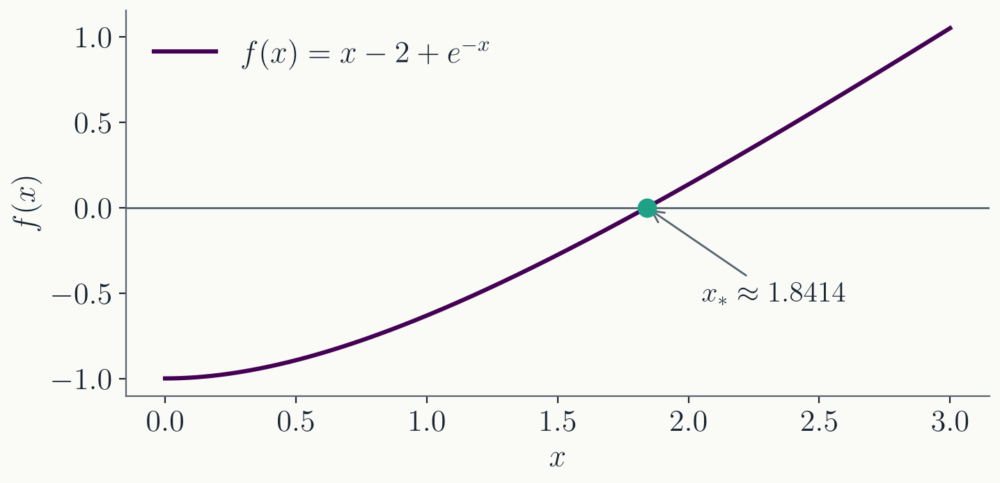
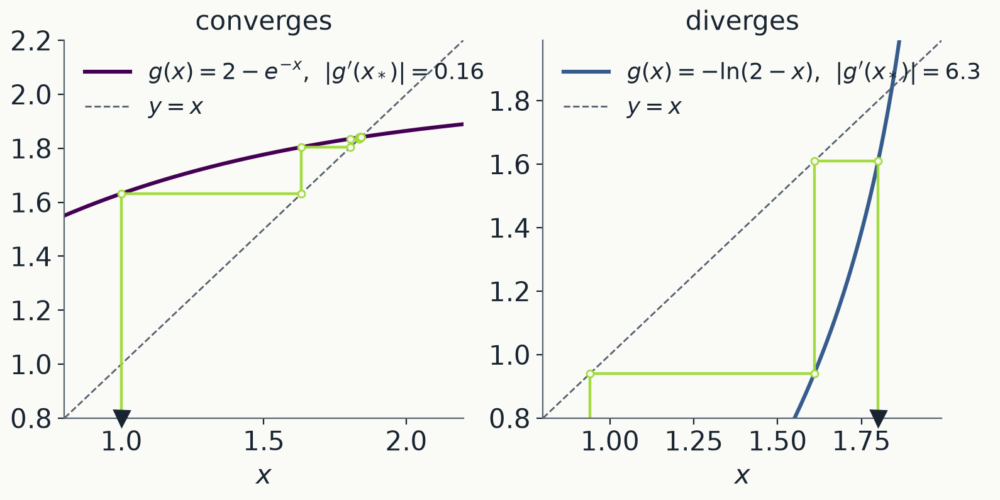
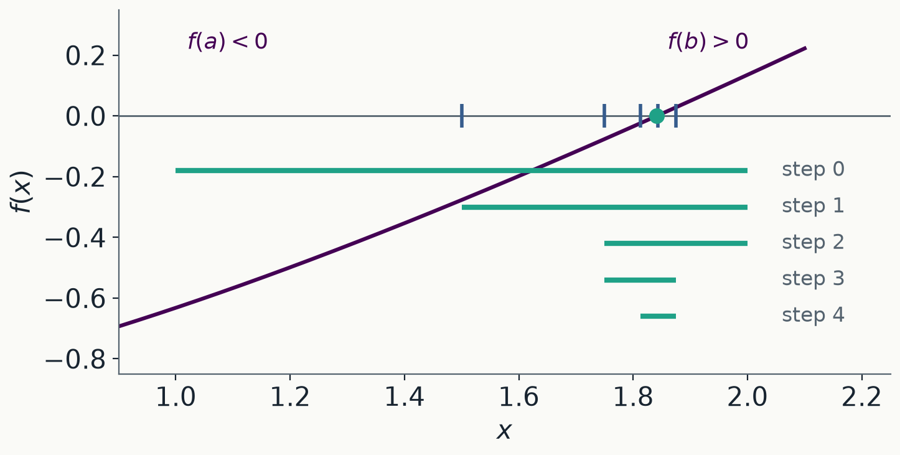
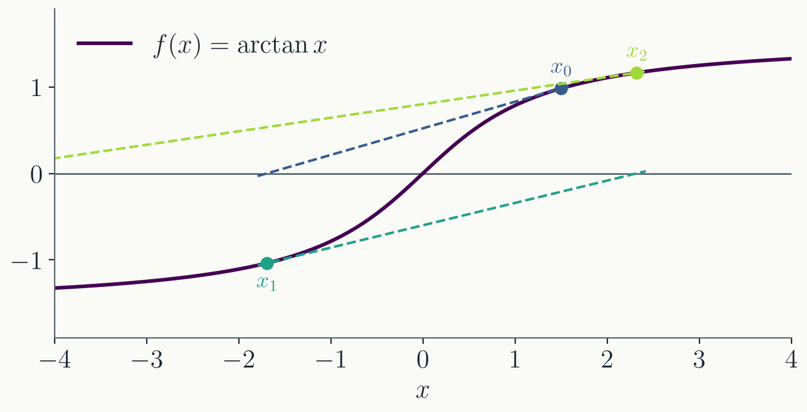
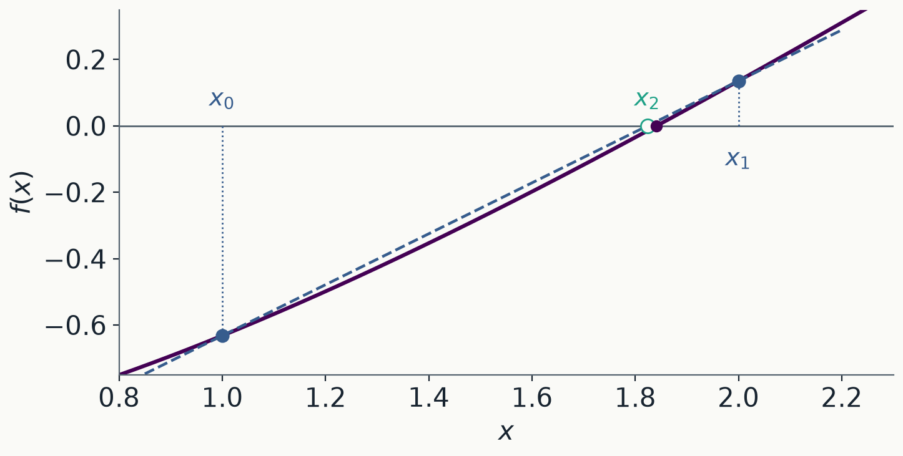

Today
- The problem. Solve $f(x) = 0$.
- Iterative methods. Improving a guess step by step, and how fast the error shrinks.
- Implementation. Tolerances, failure, and passing a function to a function in C++.
Part I · The problem
Find $x$ such that $f(x) = 0$
Where roots come from
- Orbits. Where is a planet at time $t$? The position follows from the eccentric anomaly $E$, which solves Kepler's equation $E - e\sin E = M(t)$. No closed form; solved billions of times a day by orbit propagators.
- Quantum wells. The bound-state energies of a finite square well solve $\tan z = \sqrt{(z_0/z)^2 - 1}$.
- Lagrange points. Where gravity and the centrifugal force balance is a fifth-degree polynomial in the distance. That is Homework 2.
When a formula exists
$ax^2 + bx + c = 0$: $\;x_{1,2} = \dfrac{-b \pm \sqrt{b^2 - 4ac}}{2a}$
- When $b^2 \gg 4ac$, one root computes as $-b + \sqrt{b^2 - 4ac}$: two nearly equal numbers subtracted, i.e. catastrophic cancellation (lecture 1).
- $a = 1$, $b = 10^8$, $c = 1$: the small root is $-1.0\times10^{-8}$. The formula gives $-7.45\times10^{-9}$, 25% off.
- The fix avoids the subtraction: with $q = -\tfrac12\big(b + \operatorname{sgn}(b)\sqrt{b^2-4ac}\big)$, take $x_1 = q/a$ and $x_2 = c/q$.
Most equations do not have a formula at all.
When no formula exists
$x = 2 - e^{-x}$, or equivalently $f(x) = x - 2 + e^{-x} = 0$.

There is no closed-form solution. A numerical method instead produces a sequence $x_0, x_1, x_2, \dots$ approaching $x_* = 1.84140566\ldots$
Part II · Iterative methods
Fixed point · bisection · Newton · secant
Fixed-point iteration
- Rewrite $f(x) = 0$ in the form $x = g(x)$. For example $g(x) = x - f(x)$, or any other rearrangement.
- Start from a guess $x_0$ and iterate: $$x_{n+1} = g(x_n)$$
- Stop when $x_{n+1}$ and $x_n$ agree to the precision you want.
- Our example is already in that form: $g(x) = 2 - e^{-x}$.
$x_*$ is called a fixed point of $g$: plugging it in gives it back.
Fixed-point iteration
$x_{n+1} = 2 - e^{-x_n}$ from $x_0 = 1$:
| $n$ | $x_n$ | $|x_n - x_*|$ |
|---|---|---|
| 0 | 1.00000 | $8.4\times10^{-1}$ |
| 1 | 1.63212 | $2.1\times10^{-1}$ |
| 2 | 1.80449 | $3.7\times10^{-2}$ |
| 3 | 1.83544 | $6.0\times10^{-3}$ |
| 4 | 1.84046 | $9.5\times10^{-4}$ |
| 5 | 1.84126 | $1.5\times10^{-4}$ |
| 6 | 1.84138 | $2.4\times10^{-5}$ |
- Each step shrinks the error by about the same factor, here $0.16$.
- About one more correct digit every 1.3 steps.
- Why $0.16$? Next slide.
Convergence
Expand $g$ around the fixed point $x_*$, where $g(x_*) = x_*$:
$$x_{n+1} - x_* = g(x_n) - g(x_*) = g'(x_*)\,(x_n - x_*) + \cdots$$- Each step multiplies the error by $g'(x_*)$. The iteration converges if $|g'(x_*)| < 1$, and then $|x_n - x_*| \approx |g'(x_*)|^n\,|x_0 - x_*|$.
- This is linear convergence: a fixed number of digits per step.
- For $g(x) = 2 - e^{-x}$: $g'(x_*) = e^{-x_*} = 0.159$. That is the $0.16$ in the table.
Convergence is slow when $|g'(x_*)|$ is close to 1, and absent when it exceeds 1.
When $|g'| > 1$

The same equation rearranged as $x = -\ln(2 - x)$ has $|g'(x_*)| = 6.3$: the iteration runs away. If $g$ does not contract, its inverse does, because $(g^{-1})' = 1/g'$. Solve $x = g^{-1}(x)$ instead.
Bisection method

- Find $a$, $b$ with $f(a)$ and $f(b)$ of opposite sign. If $f$ is continuous, a root lies between them.
- Take the midpoint. Keep the half where the sign still changes. Repeat.
Bisection method
- After $n$ steps the interval has width $(b - a)/2^n$. To reach width $\varepsilon$: $$n = \log_2\frac{b - a}{\varepsilon}$$
- $[1, 2]$ down to $10^{-15}$: 50 steps. Fixed-point iteration at rate $0.16$ needed 19. Newton will need 5.
- The count does not depend on $f$. With a valid bracket, bisection cannot fail.
The midpoint error is not monotone (it can jump when the root is near an endpoint), but the bracket always shrinks.
Bisection method
- No sign change. $f(x) = x^2$ touches zero without crossing. There is no bracket, so bisection never starts.
- A sign change that is not a root. $f(x) = 1/x$ on $[-1, 2]$ changes sign, and bisection converges to $x = 0$, which is a pole, not a root.
- Several roots in the bracket. You get one of them, and you do not choose which.
Bisection finds a sign change; only continuity makes that a root.
Newton's method

- Follow the tangent line at $x_n$ down to the axis: $x_{n+1} = x_n - f(x_n)/f'(x_n)$.
- It is fixed-point iteration with $g(x) = x - f(x)/f'(x)$.
Newton's method
Expand $f$ around $x_*$ to second order and use $f(x_*) = 0$:
$$x_{n+1} - x_* = \frac{f''(x_*)}{2f'(x_*)}\,(x_n - x_*)^2 + \cdots$$- The error is squared each step: quadratic convergence. The number of correct digits doubles.
- In fixed-point language: $g'(x) = f f''/(f')^2$, so $g'(x_*) = 0$. The linear term is gone.
- Our example from $x_0 = 1$: errors $1.6\times10^{-1}$, $2.1\times10^{-3}$, $4.1\times10^{-7}$, $1.6\times10^{-14}$. Four steps.
The price: it needs $f'$, and a starting point close enough to the root.
Newton's method

- $f(x) = \arctan x$ from $x_0 = 1.5$: each tangent overshoots and lands farther away. From $x_0 = 1.3$ it converges.
- $f'(x_n) \approx 0$ sends $x_{n+1}$ very far away. The iteration can also get stuck in a cycle.
- There is no bracket and no guarantee: fast near a root, unpredictable far from one.
Secant method

- No $f'$? Use the slope of the line through the last two points instead of the tangent: $$x_{n+1} = x_n - f(x_n)\,\frac{x_n - x_{n-1}}{f(x_n) - f(x_{n-1})}$$
- Needs two starting points, not a bracket, and only $f$.
Secant method
- Convergence order is the golden ratio, $\varphi = (1 + \sqrt5)/2 \approx 1.62$: the error obeys $e_{n+1} \approx C\,e_n\,e_{n-1}$.
- Each step costs one new evaluation of $f$. Newton costs $f$ and $f'$.
- Per function evaluation, secant is usually faster: two secant steps (two evaluations) give order $\varphi^2 \approx 2.6$; one Newton step (two evaluations) gives order 2.
- Shares Newton's failure modes, plus one more: if $f(x_n) = f(x_{n-1})$, the slope is $0/0$.
Practical root finders combine a fast method with bisection as a fallback; Brent's method is the standard example.
Comparison
$|x_n - x_*|$ for $f(x) = x - 2 + e^{-x}$. Fixed point and Newton from $x_0 = 1$; bisection on $[1, 2]$; secant from $x_0 = 1$, $x_1 = 2$.
| $n$ | fixed point | bisection | secant | Newton |
|---|---|---|---|---|
| 1 | $2.1\times10^{-1}$ | $9.1\times10^{-2}$ | $1.8\times10^{-2}$ | $1.6\times10^{-1}$ |
| 2 | $3.7\times10^{-2}$ | $3.4\times10^{-2}$ | $2.5\times10^{-4}$ | $2.1\times10^{-3}$ |
| 3 | $6.0\times10^{-3}$ | $2.9\times10^{-2}$ | $4.2\times10^{-7}$ | $4.1\times10^{-7}$ |
| 4 | $9.5\times10^{-4}$ | $2.3\times10^{-3}$ | $9.9\times10^{-12}$ | $1.6\times10^{-14}$ |
| 5 | $1.5\times10^{-4}$ | $1.3\times10^{-2}$ | $0$ | $0$ |
- Needs: a contracting $g$ / a bracket / two starts / $f'$ and a good start.
- Rate: linear ($0.16$) / linear ($0.5$, not monotone) / order $1.6$ / order $2$.
Part III · Implementation
Tolerance, failure, and C++
When to stop
- Three natural tests: the residual $|f(x_n)| < \varepsilon$; the step $|x_{n+1} - x_n| < \varepsilon$; the bracket $b - a < \varepsilon$.
- Absolute or relative? $|x_{n+1} - x_n| < \varepsilon\,|x_n|$ is the same test for a root at $10^{-3}$ and at $10^{9}$. Absolute tolerance only makes sense when you know the scale, or the root may be zero.
- The floor. Near $x_* = 1.84$, doubles are $2.2\times10^{-16}$ apart (Lecture 1). Ask for $|x_{n+1} - x_n| < 10^{-20}$ and the loop never ends. The residual has a floor too: about $\epsilon\,|x_* f'(x_*)|$.
Do not ask for more digits than the format has.
Reporting failure
- Always set a maximum number of iterations; without one, a non-converging iteration loops forever.
- NaN propagates silently:
NaN < tolis false, so a NaN iterate never triggers the stop test. Check withstd::isnan. - Return both the answer and whether the iteration converged:
std::tuple<bool, double> result = bisection(f, 1.0, 2.0, 1e-12);
auto [ok, x] = result; // structured binding: unpack the tuple
if (!ok) { std::cout << "did not converge\n"; }
This is the convention Homework 2 asks for:
{converged, x}, with false for a bad
bracket, too many iterations, or NaN.
Passing a function to a function
Root-finding functions take $f$ as an argument. This requires writing a function template: the one exception to lecture 2's rule.
template <typename F> // F: anything callable as f(x)
double evaluate(const F& f, double x) {
return f(x);
}
double square(double x) { return x * x; }
evaluate(square, 3.0); // 9.0
evaluate([](double x) { return x * x; }, 3.0); // 9.0, with a lambda
const double e = 0.3, M = 1.0; // problem parameters
auto kepler = [e, M](double E) { return E - e * std::sin(E) - M; };
evaluate(kepler, 1.0); // [e, M]: it may use them
A lambda is a function without a name, written where it is used. The brackets list the outside variables it may use.
Bisection in C++
template <typename F> // f(a) and f(b) must have opposite signs
std::tuple<bool, double> bisection(const F& f, double a, double b, double tol) {
const int max_iter = 200; // 2^-200 is far below epsilon
double fa = f(a);
if (fa * f(b) > 0.0) return {false, a}; // no sign change: no bracket
for (int i = 0; i < max_iter; ++i) {
const double mid = 0.5 * (a + b);
const double fm = f(mid);
if (std::abs(fm) < tol) return {true, mid};
if (fa * fm < 0.0) { b = mid; } else { a = mid; fa = fm; }
}
return {false, 0.5 * (a + b)};
}
Needs
<cmath> and <tuple>. Run on
$x - 2 + e^{-x}$, $[1, 2]$: $1.84141$. On $x^2$, $[1, 2]$:
false.
Where this goes next
- Homework 2: implement all four methods as
templates with the
{converged, x}convention, then use them on a real problem. - Next lecture: numerical integration.
- References:
- Numerical Recipes, 3rd ed., chapter 9 (root finding).
- Burden & Faires, Numerical Analysis, chapter 2.
- 3Blue1Brown, Newton's fractal (what Newton does far from a root).